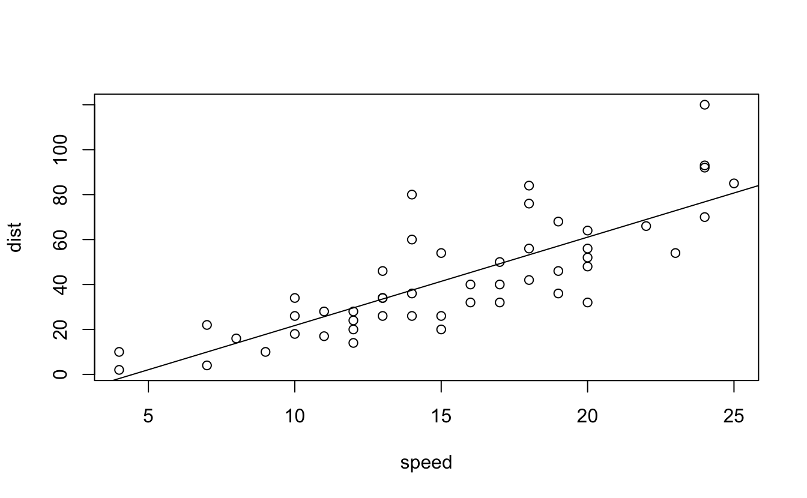

10 Rmarkdown
We assume you have already installed R (https://www.r-project.org) (R Core Team 2022) and the RStudio IDE (https://www.rstudio.com). RStudio is not required but recommended, because it makes it easier for an average user to work with R Markdown. If you do not have RStudio IDE installed, you will have to install Pandoc (http://pandoc.org), otherwise there is no need to install Pandoc separately because RStudio has bundled it. Next you can install the rmarkdown package in R:
# Install from CRAN
install.packages('rmarkdown')
# Or if you want to test the development version,
# install from GitHub
if (!requireNamespace("devtools"))
install.packages('devtools')
devtools::install_github('rstudio/rmarkdown')If you want to generate PDF output, you will need to install LaTeX. For R Markdown users who have not installed LaTeX before, we recommend that you install TinyTeX (https://yihui.name/tinytex/):
TinyTeX is a lightweight, portable, cross-platform, and easy-to-maintain LaTeX distribution. The R companion package tinytex (Xie 2022c) can help you automatically install missing LaTeX packages when compiling LaTeX or R Markdown documents to PDF, and also ensures a LaTeX document is compiled for the correct number of times to resolve all cross-references. If you do not understand what these two things mean, you should probably follow our recommendation to install TinyTeX, because these details are often not worth your time or attention.
With the rmarkdown package, RStudio/Pandoc, and LaTeX, you should be able to compile most R Markdown documents. In some cases, you may need other software packages, and we will mention them when necessary.
Challenge 1 Install Rmarkdown and TinyTex to output a PDF document.
10.1 Basics
R Markdown provides an authoring framework for data science. You can use a single R Markdown file to both
save and execute code, and
generate high quality reports that can be shared with an audience.
R Markdown was designed for easier reproducibility, since both the computing code and narratives are in the same document, and results are automatically generated from the source code. R Markdown supports dozens of static and dynamic/interactive output formats.
If you prefer a video introduction to R Markdown, we recommend that you check out the website https://rmarkdown.rstudio.com, and watch the videos in the “Get Started” section, which cover the basics of R Markdown.
Below is a minimal R Markdown document, which should be a plain-text file, with the conventional extension .Rmd:
This is a paragraph in an R Markdown document.
Below is a code chunk:

The slope of the regression is 3.932.
Challenge 2 Recreate the code chunk above and knit it.
Challenge 3 Recreate the in-line code and knit your Rmarkdown file again.
The usual way to compile an R Markdown document is to click the Knit button as shown in Figure 2.1, and the corresponding keyboard shortcut is Ctrl + Shift + K (Cmd + Shift + K on macOS). Under the hood, RStudio calls the function rmarkdown::render() to render the document in a new R session. Please note the emphasis here, which often confuses R Markdown users. Rendering an Rmd document in a new R session means that none of the objects in your current R session (e.g., those you created in your R console) are available to that session. 2 Reproducibility is the main reason that RStudio uses a new R session to render your Rmd documents: in most cases, you may want your documents to continue to work the next time you open R, or in other people’s computing environments. See this StackOverflow answer if you want to know more.
If you must render a document in the current R session, you can also call rmarkdown::render() by yourself, and pass the path of the Rmd file to this function. The second argument of this function is the output format, which defaults to the first output format you specify in the YAML metadata (if it is missing, the default is html_document). When you have multiple output formats in the metadata, and do not want to use the first one, you can specify the one you want in the second argument, e.g., for an Rmd document foo.Rmd with the metadata:
You can render it to PDF via:
The function call gives you much more freedom (e.g., you can generate a series of reports in a loop), but you should bear reproducibility in mind when you render documents this way. Of course, you can start a new and clean R session by yourself, and call rmarkdown::render() in that session. As long as you do not manually interact with that session (e.g., manually creating variables in the R console), your reports should be reproducible.
Another main way to work with Rmd documents is the R Markdown Notebooks.
A few R Markdown extension packages, such as bookdown and blogdown, have their own way of compiling documents, and we will introduce them later. It is also possible to render a series of reports instead of single one from a single R Markdown source document. You can parameterize an R Markdown document, and generate different reports using different parameters.
10.2 Output Formats
There are two types of output formats in the rmarkdown package: documents, and presentations. All available formats are listed below:
beamer_presentationcontext_documentgithub_documenthtml_documentioslides_presentationlatex_documentmd_documentodt_documentpdf_documentpowerpoint_presentationrtf_documentslidy_presentationword_document
Each output format is often accompanied with several format options. All these options are documented on the R package help pages. For example, you can type ?rmarkdown::html_document in R to open the help page of the html_document format. When you want to use certain options, you have to translate the values from R to YAML, e.g.,
can be written in YAML as:
10.3 Rmarkdown Syntax
The text in an R Markdown document is written with the Markdown syntax. Precisely speaking, it is Pandoc’s Markdown. There are many flavors of Markdown invented by different people, and Pandoc’s flavor is the most comprehensive one to our knowledge. You can find the full documentation of Pandoc’s Markdown at https://pandoc.org/MANUAL.html. We strongly recommend that you read this page at least once to know all the possibilities with Pandoc’s Markdown, even if you will not use all of them. This section is adapted from Section 2.1 of Xie (2016), and only covers a small subset of Pandoc’s Markdown syntax.
10.3.1 In-line Formatting
Inline text will be italic if surrounded by underscores or asterisks, e.g., _text_ or *text*. Bold text is produced using a pair of double asterisks (**text**). A pair of tildes (~) turn text to a subscript (e.g., H~3~PO~4~ renders H3PO4). A pair of carets (^) produce a superscript (e.g., Cu^2+^ renders Cu2+).
There are multiple ways to insert citations, and we recommend that you use BibTeX databases, because they work better when the output format is LaTeX/PDF. Section 2.8 of Xie (2016) has explained the details. The key idea is that when you have a BibTeX database (a plain-text file with the conventional filename extension .bib) that contains entries like:
Challenge 4 Write some Bold and Italicized Text and knit the document.
Challenge 5 Run an in-line code chunk, such as the output of the first cell of your data.frame
https://rmarkdown.rstudio.com/authoring_basics.html
https://www.rstudio.com/wp-content/uploads/2015/02/rmarkdown-cheatsheet.pdf